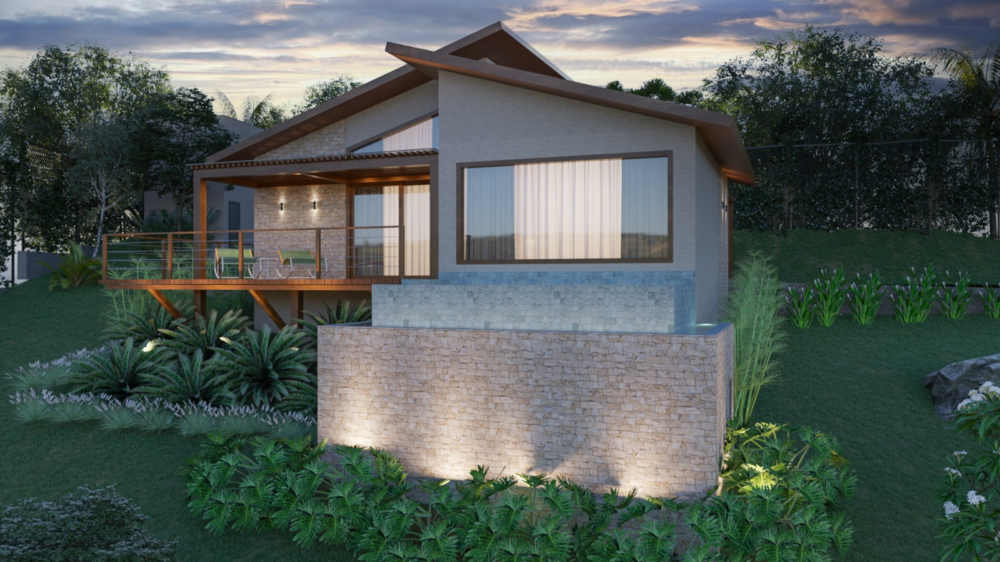

SOLAR DOESPINHAÇO
O espinhaço te conecta com a natureza.

Chalé
Lapinha da Serra · Minas Gerais
Um chalé boutique dentro da paisagem
Silêncio, natureza e hospitalidade no alto da Serra do Espinhaço.

Repouso
A suíte
Linhas serenas, materiais nobres
Cama king size, banheira de imersão e um banho em pedra natural, com a serra na janela.

Encontro
Sala e cozinha
O coração da estadia
Marcenaria sob medida e portas de correr que trazem a cordilheira para dentro da sala.

Horizonte
Piscina e deck
Onde a água encontra a serra
Piscina de borda infinita aquecida e deck em cumaru sob o pergolado.

Lugares para conhecer

Silêncio
À noite
O fogo aceso, a serra em volta
Noites de inverno no deck, junto ao calor do fogo.
Sua estadia na serra começa aqui
solardoespinhaco.com.br@solardoespinhaco
Solar do Espinhaço
Lapinha da Serra
Pausado · toque para seguir